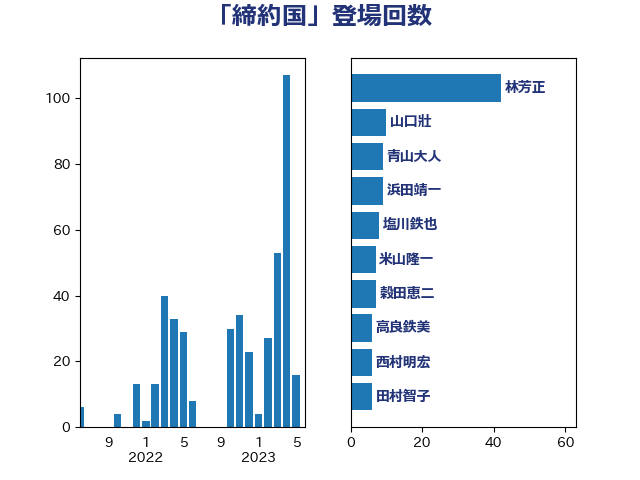

単語「締約国」

| 林芳正 | 自由民主党 | 42 回 |
| 山口壯 | 自由民主党 | 10 回 |
| 青山大人 | 立憲民主党 | 9 回 |
| 浜田靖一 | 自由民主党 | 9 回 |
| 塩川鉄也 | 日本共産党 | 8 回 |
| 米山隆一 | 立憲民主党 | 7 回 |
| 穀田恵二 | 日本共産党 | 7 回 |
| 高良鉄美 | 無所属 | 6 回 |
| 西村明宏 | 自由民主党 | 6 回 |
| 田村智子 | 日本共産党 | 6 回 |
| 岸田文雄 | 自由民主党 | 6 回 |
| 山口那津男 | 公明党 | 6 回 |
| 谷合正明 | 公明党 | 5 回 |
| 福島みずほ | 社会民主党 | 5 回 |
| 山添拓 | 日本共産党 | 5 回 |
| 小池晃 | 日本共産党 | 5 回 |
| 赤嶺政賢 | 日本共産党 | 4 回 |
| 緒方林太郎 | 無所属 | 4 回 |
| 櫛渕万里 | れいわ新選組 | 4 回 |
| 徳永久志 | 立憲民主党 | 4 回 |
| 平林晃 | 公明党 | 4 回 |
| 鈴木貴子 | 自由民主党 | 3 回 |
| 金城泰邦 | 公明党 | 3 回 |
| 輿水恵一 | 公明党 | 3 回 |
| 笠井亮 | 日本共産党 | 3 回 |
| 石原正敬 | 自由民主党 | 3 回 |
| 斉藤鉄夫 | 公明党 | 3 回 |
| 志位和夫 | 日本共産党 | 3 回 |
| 寺田学 | 立憲民主党 | 3 回 |
| 吉田宣弘 | 公明党 | 3 回 |
| 青木愛 | 立憲民主党 | 2 回 |
| 葉梨康弘 | 自由民主党 | 2 回 |
| 羽田次郎 | 立憲民主党 | 2 回 |
| 空本誠喜 | 日本維新の会 | 2 回 |
| 福田昭夫 | 立憲民主党 | 2 回 |
| 福山哲郎 | 立憲民主党 | 2 回 |
| 猪口邦子 | 自由民主党 | 2 回 |
| 牧山ひろえ | 立憲民主党 | 2 回 |
| 松野博一 | 自由民主党 | 2 回 |
| 本村伸子 | 日本共産党 | 2 回 |
| 新妻秀規 | 公明党 | 2 回 |
| 小田原潔 | 自由民主党 | 2 回 |
| 宮本徹 | 日本共産党 | 2 回 |
| 齋藤健 | 自由民主党 | 1 回 |
| 高橋千鶴子 | 日本共産党 | 1 回 |
| 須藤元気 | 無所属 | 1 回 |
| 青島健太 | 日本維新の会 | 1 回 |
| 鈴木敦 | 国民民主党 | 1 回 |
| 鈴木宗男 | 日本維新の会 | 1 回 |
| 道下大樹 | 立憲民主党 | 1 回 |
| 辻清人 | 自由民主党 | 1 回 |
| 角田秀穂 | 公明党 | 1 回 |
| 舩後靖彦 | れいわ新選組 | 1 回 |
| 舟山康江 | 国民民主党 | 1 回 |
| 篠原豪 | 立憲民主党 | 1 回 |
| 秋野公造 | 公明党 | 1 回 |
| 秋本真利 | 自由民主党 | 1 回 |
| 礒崎哲史 | 国民民主党 | 1 回 |
| 田村貴昭 | 日本共産党 | 1 回 |
| 滝沢求 | 自由民主党 | 1 回 |
| 水野素子 | 立憲民主党 | 1 回 |
| 梅村みずほ | 日本維新の会 | 1 回 |
| 柳ヶ瀬裕文 | 日本維新の会 | 1 回 |
| 松山政司 | 自由民主党 | 1 回 |
| 東徹 | 日本維新の会 | 1 回 |
| 木原稔 | 自由民主党 | 1 回 |
| 日下正喜 | 公明党 | 1 回 |
| 後藤茂之 | 自由民主党 | 1 回 |
| 山田勝彦 | 立憲民主党 | 1 回 |
| 山本有二 | 自由民主党 | 1 回 |
| 小野田紀美 | 自由民主党 | 1 回 |
| 小倉將信 | 自由民主党 | 1 回 |
| 宮崎政久 | 自由民主党 | 1 回 |
| 宮口治子 | 立憲民主党 | 1 回 |
| 天畠大輔 | れいわ新選組 | 1 回 |
| 大岡敏孝 | 自由民主党 | 1 回 |
| 国定勇人 | 自由民主党 | 1 回 |
| 吉良よし子 | 日本共産党 | 1 回 |
| 伊藤俊輔 | 立憲民主党 | 1 回 |
| 仁比聡平 | 日本共産党 | 1 回 |
| 井上哲士 | 日本共産党 | 1 回 |
| 上杉謙太郎 | 自由民主党 | 1 回 |
| 三宅伸吾 | 自由民主党 | 1 回 |